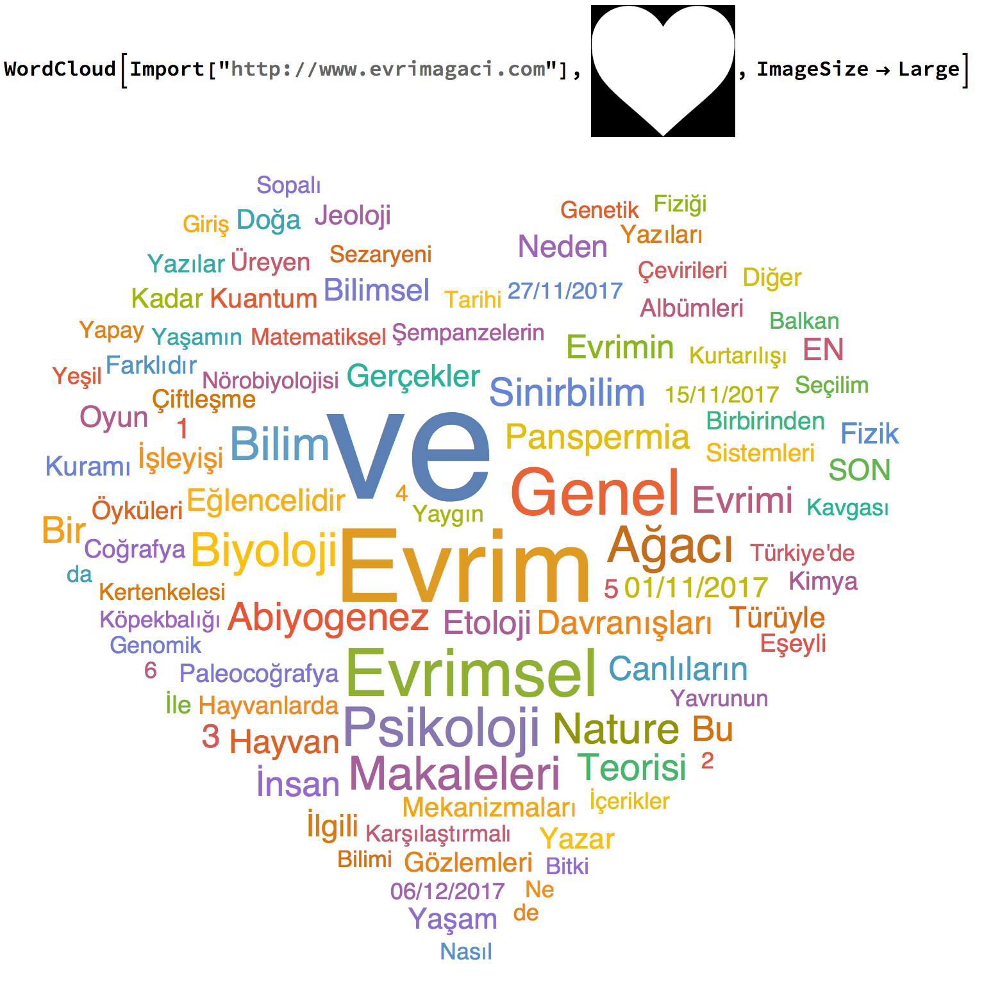

S.Albayrak Anasayfa Kategoriler
[next] [prev] [prev-tail] [tail] [up]
Mathematica’ya Evrim Ağacı’nın sitesine girip sitede bulduğu kelimelerin sıklığına göre bir kalp yapmasını söyledim. Kelime ne kadar çok geçiyorsa o kadar büyük yani resimde. Tek satırlık kodu da paylaşıyorum. 
[next] [prev] [prev-tail] [front] [up]